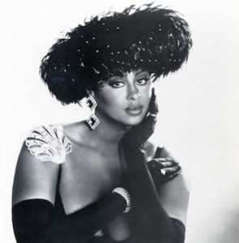
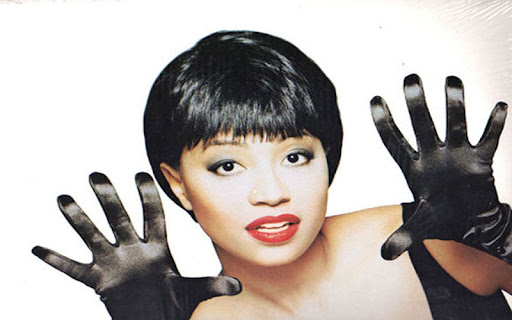

A diva (/ˈdiːvə/; Italian: [ˈdiːva]) is the Latin word for a goddess and can also refer to a celebrated female singer; a woman of outstanding talent in the world of opera, and by extension in theatre, cinema and popular music.
Without a doubt, the 80s was one of the most significant decades for music history, and especially so for female singers. With the growth of MTV, the 80's saw the explosion of solo female artists in Pop, such as Madonna, Cyndi Lauper, Pat Benatar, Paula Abdul; to R&B including Chaka Kahn, Jodie Watley and Karen White. Along with famous groups, such as The Pointer Sisters, The Bangles and the Go-Go's just to name a few.
The 80's also generated powerhouse female R&B singers or Divas, who are talented artists and true innovators. Although they never acheived the cross-over appeal of Whitney Houston or Janet Jackson, they remain true legends in the world of R&B! Below are three of my favorites:
Phyllis Hyman
Phyllis Linda Hyman (July 6, 1949 – June 30, 1995) was an American singer, songwriter, and actress. Hyman is best known for her music during the late 1970s through the early 1990s, some of her most notable songs were "You Know How to Love Me" (1979), "Living All Alone" (1986) and "Don't Wanna Change the World" (1991). Hyman also performed on Broadway in the 1981 musical based on the music of Duke Ellington, Sophisticated Ladies, which ran from 1981 until 1983. The musical earned her a Theatre World Award and a Tony Award nomination for Best Performance by a Featured Actress in a Musical.go to top
Stephanie Mills
 Stephanie Dorthea Mills (born March 22, 1957) is an American singer and songwriter. Mills rose to stardom as "Dorothy" in the original 7 Time Tony Award Winning Broadway run of the musical The Wiz from 1974 to 1979. The song "Home" from the show later became a Number 1 U.S. R&B hit for Mills and her signature song. During the 1980s, Mills scored five Number 1 R&B hits, including "Home", "I Have Learned to Respect the Power of Love", "I Feel Good All Over", "(You're Puttin') A Rush on Me" and "Something in the Way (You Make Me Feel)". Mills won a Grammy Award for Best Female R&B Vocal Performance for her song "Never Knew Love Like This Before" in 1981.go to top
Stephanie Dorthea Mills (born March 22, 1957) is an American singer and songwriter. Mills rose to stardom as "Dorothy" in the original 7 Time Tony Award Winning Broadway run of the musical The Wiz from 1974 to 1979. The song "Home" from the show later became a Number 1 U.S. R&B hit for Mills and her signature song. During the 1980s, Mills scored five Number 1 R&B hits, including "Home", "I Have Learned to Respect the Power of Love", "I Feel Good All Over", "(You're Puttin') A Rush on Me" and "Something in the Way (You Make Me Feel)". Mills won a Grammy Award for Best Female R&B Vocal Performance for her song "Never Knew Love Like This Before" in 1981.go to top
Lisa Fischer
Lisa Fischer (born December 1, 1958) is an American singer and songwriter. She found success with her 1991 debut album So Intense, which produced the Grammy Award–winning hit single "How Can I Ease the Pain". She has been a back-up singer for a number of famous artists including Sting, Luther Vandross and Tina Turner, and toured with The Rolling Stones from 1989 to 2015.go to top